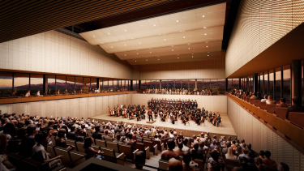

Unm Ccat
2026

The Center for Collaborative Arts and Technology (CCAT) is a ground-up facility providing a new gateway to the arts at the University of New Mexico (UNM). Occupying a site along the historic Route 66, CCAT is positioned at the interface between UNM’s campus and the city of Albuquerque. While many of the building’s performance, film, and technology spaces are inwardly focused, the prominent public site fosters visual connection between the activities within and its unique surroundings. The building is organized around a transparent horizontal slice, which creates a “super lobby” at the second level, offering elevated panoramic views of Route 66 and the Sandia Mountains. This horizontal slice welcomes visitors into the heart of the building while creating space for teaching, performance, exhibitions, and research above and below.
Project Information
Groundbreaking
2024
Competition
2023
Anticipated
Completion
2026
Credits

Information
CCAT also houses the ARTSLab, an interdisciplinary research space designed to facilitate artistic collaboration through a new immersive extended reality studio and fabrication space. An art gallery, soundstage, classroom, and robust back of house spaces provide additional programmatic support for the College of Fine Arts (CFA), encouraging new forms of collaboration, research, and performance across the colleges. The building can be used by departments internal and external to the CFA, making it a truly shared arts hub. A series of sculptural outdoor spaces carved from the building’s stepping volumes allow the activities of the building to spill out, facilitating social crossover and interaction.
Inside, CCAT is anchored by a 600-seat performance hall with natural acoustics for large musical ensembles. The hall can transform to present opera, film, and lectures, creating a venue that enables UNM’s award-winning academic programs to reach a larger audience.